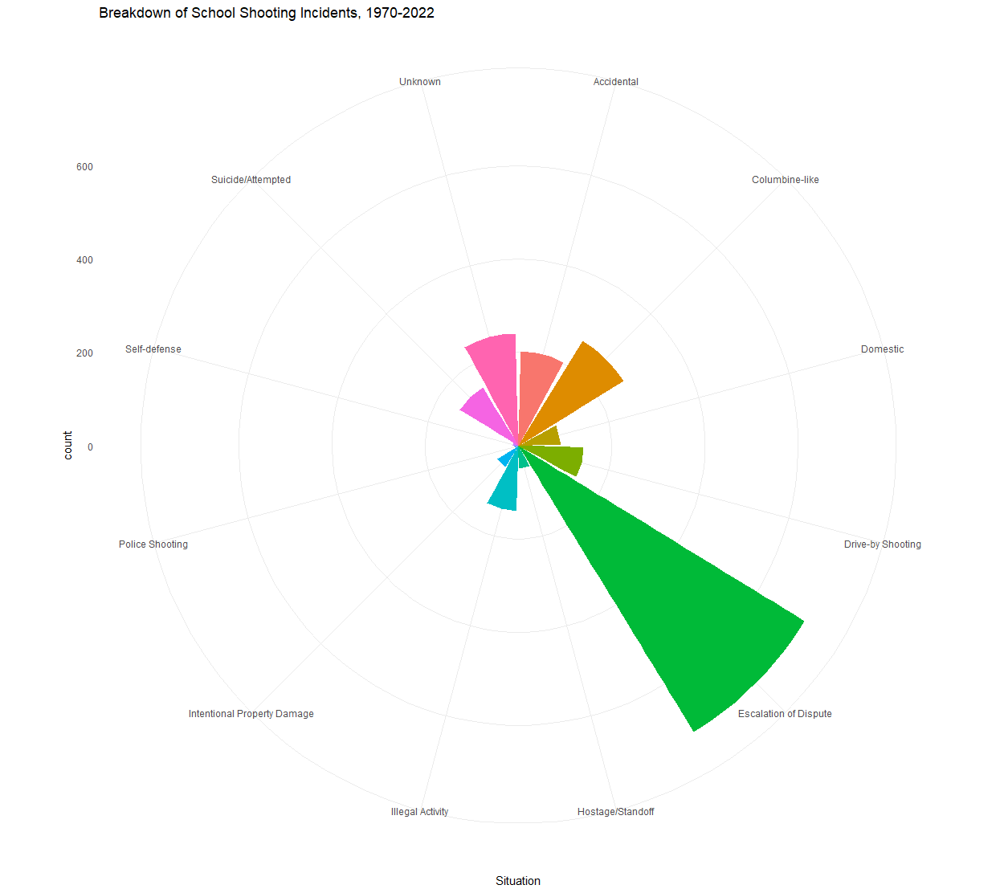
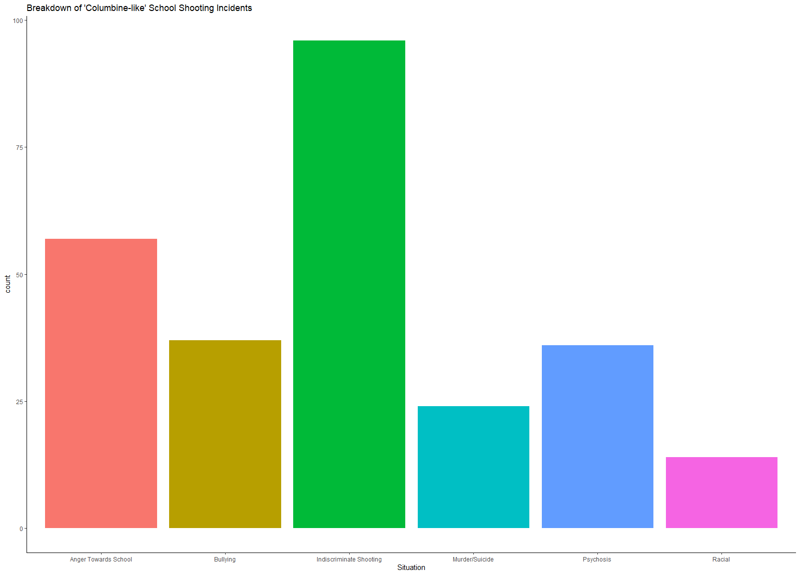
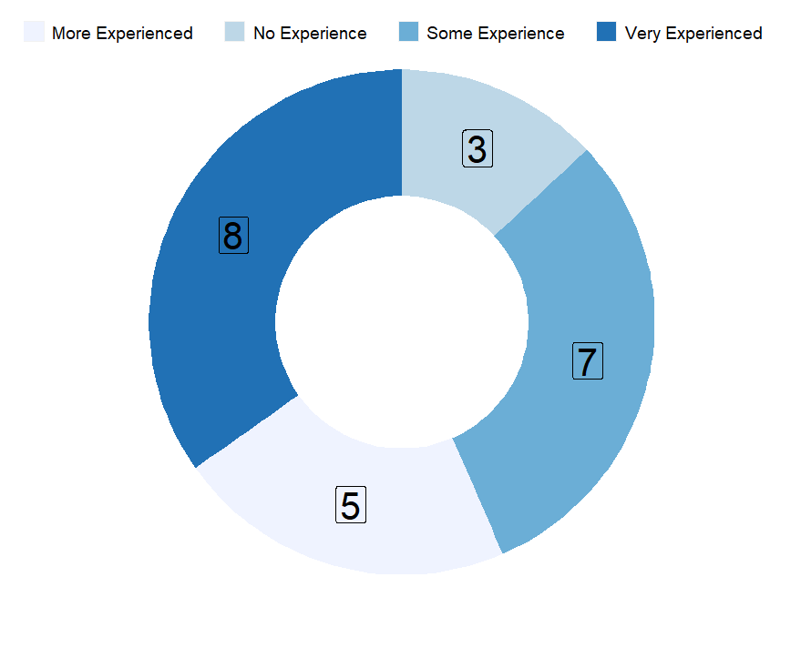
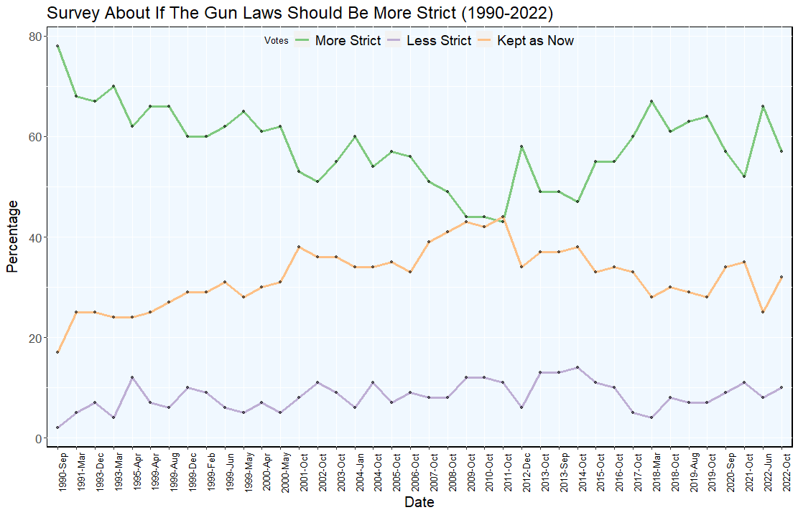
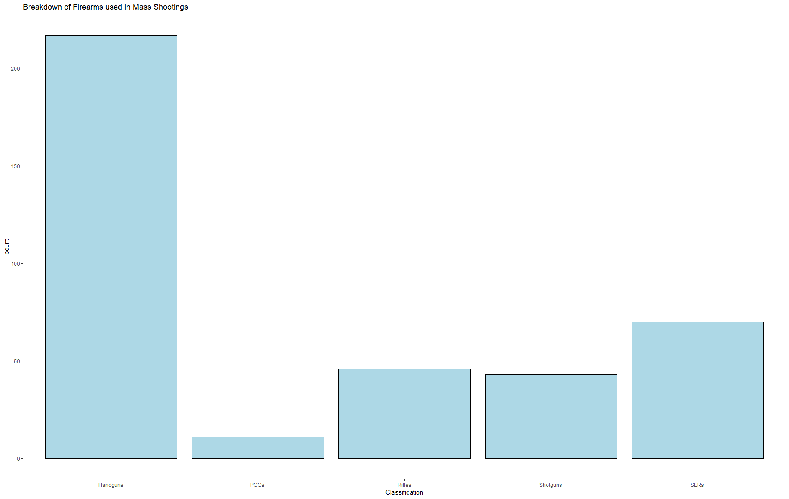
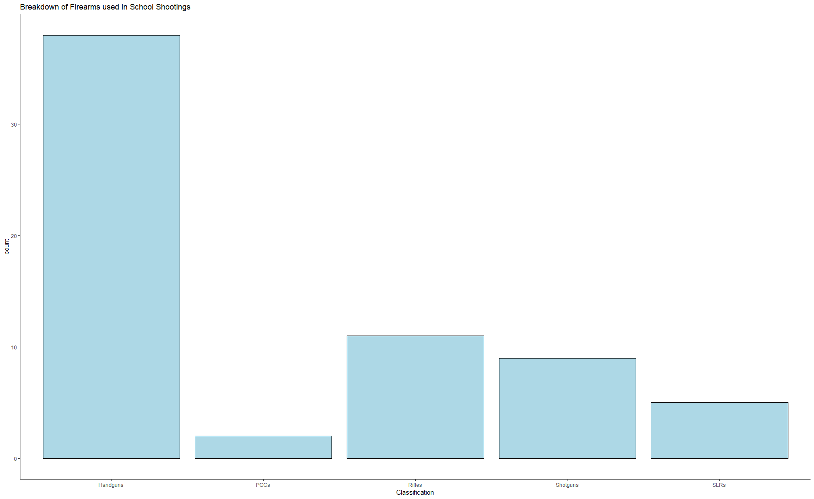

School Shootings in USA:
A Comprehensive Study
Abstract—School shootings in the USA claim many lives and
it’s a growing concern for students and families. This paper will
analyze these shootings and will look at some possible reasons
behind why they are happening. We will look at incident types,
incident numbers, guns used, mental health, gun laws, and gun
proficiency of the shooters.
Keywords—shootings, schools, USA, guns, students, lives, laws,
mental health
INTRODUCTION
In 1999, a high school massacre in Columbine,
Colorado shook the US. With 15 deaths and 21 injured, this
attack was one of the deadliest mass shootings in the US.
Families of the victims were devastated by their losses, and the
country prayed that this event would never happen again.
However, the number of school shootings in the US increased
rapidly after the devastating massacre. Post-Columbine, the US
dealt with more than 380 school shootings all around the
country, with 89 of them happening in the 2020s. Some claim
that the reason for these events are notoriously lax gun laws
around the country while others offer different explanations.
However, decades after Columbine, there is still no clear
attempt by the government to reduce or eliminate these
incidents.
I. PURPOSE OF THIS ESSAY
In this essay, we aim to analyze the US school
shootings, their causes and whether they are increasing or not.
We will look at the data about school shootings which consists
of age, race, gun experience and lastly targets of the shooter. To
analyze the underlying reasons for these events we will look at
different explanations for why they keep happening. First, we
will look at the gun laws of each state and compare states with
strict and lax laws and whether these laws correlate with school
shootings or not. We will also look at how mental health affects
these shootings.
II. DETAILS ABOUT SHOOTINGS
A. General Details:
We will start by talking about the statistics related to these
school shootings. First, we need to understand the term mass
shooting. This term refers to incidents of gun violence where
multiple people lost their lives. This term is used for various
violent crimes; including, but not limited to, shootings that
happen in schools. Prior to the 1999 Columbine high school
shooting, which left 24 people injured and 13 dead, there were
usually six months between mass shootings [5]. In the period
between Columbine and the 2015 Charleston church shooting,
it dropped to one almost every 2.5 months [5]. After 2015, it
dropped further, to one every six weeks [5]. Data even mentions
that one-third of the total death toll since 1966 is after 2015 [5].
The third-deadliest school shooting happened in May 2022 at
Uvalde High School in Texas, which led to controversy about
the lack of police response.


As seen in Figure 1, in 2021 the number of school incidents
peaked compared to other 5 decades, almost more than two
times gun incidents happened compared to previous year and
summation of 2021 and 2022 years are more than any other two
years combined. Until 2010, the number of incidents were
almost always below 50 and did not have a continuous upward
trend. However, after hitting a historical low in 2010 it started a
positive trend and increased every year. The increase in these numbers
scares families and their children to go to school every
day. According to a recent survey, more than half of young
people say that they worry about mass shootings at least once a
week, and almost a third of them claim to have directly
experienced gun violence [7]. Further survey done by Pew
Research Center, it is expressed that 57% of teens reported that
they are concerned that their school is going to be the next school
to be hit by shootings.
Before we start analyzing each incident, we must ask
ourselves a question: What comes to our mind when we hear
the words “School shooting”? The 1999 massacre at Columbine
High School has shaped the stereotypical image of a school
shooting: White, mentally disturbed teenagers killing their
classmates en masse. The distribution of the types of mass
shootings that happened within school grounds, however, tell a
different story.

The pro-gun movement in the US has maintained that
“The only thing that stops a bad guy with a gun is a good guy
with a gun.”. Looking at the graph, we can see that “good guy
with a gun” incidents - Self-defense and Police-Involved
Shootings - are exceedingly rare. As we can clearly see, the
most common type of shooting incident in schools is escalation
of dispute - regular arguments that turn fatal. The shooting
incidents that we would commonly recognize as “school
shootings” are categorized under the “Columbine-like” section.
A further breakdown of this category can be found below.

A majority of “Columbine-like” attacks are caused by
anger, suicidal thoughts and psychosis and therefore tied to the
mental problems of the attacker. Attacks where the shooter was
motivated by a racist ideology are the least common. The most
common type of “Columbine-like” attacks is Indiscriminate
shooting - attackers trying to kill as many people as possible in
pursuit of a “high score”.
More than half of all school shootings are homicides,
attempted or nonfatal assault with 53% [4]. Since 2013, 302
incidents of homicides have happened in school grounds [4].
These incidents left 96 people dead and 265 injured. At least
133 of them were students [4]. There are only 4 mass shootings
that occurred between 2013 and 2021. While mass shootings
are quite rare, they account for 19% of all gun deaths and 10%
of all people that got shot in school grounds between 2013 and
2021 [4]

Research also shows the number of gun incidents in each state
in comparison to average school incidents. California has by far
the most incidents that have happened in any state, with 215
incidents since 1970. The runner-up is Texas with 38 more
incidents. 18 of the total 51 states have more than average
number of incidents - 41 per state. Also, states that banned
“assault weapons” (a legal term that is not used in the firearms
industry) like New York, California and Virginia still have
above average number of gun incidents [1].
B. Age and Race of Shooters
Research about the age and race of the school shooters
reveals that 69% of students who used guns in schools are
between 10 to 19 years old and 15% are between 20 to 29 [6].
Most school shooters are Caucasian (76%), 12% are African
Americans, 2% are Asians and 2% are Native Americans [6].
While the shooters are most likely to be Caucasians, further
study shows that only 26% of Black and 30% of Latino students feel
safe in school, while Caucasians are more likely to feel more
safe (39%) [7].
C. Gun Experience of Shooters
Many shooters had access to weapons and were
experienced in using those weapons [3]. Figure 6 shows the
firearms experience of the deadliest school shooters in the US.
Figure 5. Gun incidents in schools per
state 1970-2022.Research tells that 3 of the shooters had zero experience and it
was the first time they ever used a gun. 7 of these shooters had
some experience with guns. For example, it is reported that
these shooters had some practice, grew up around guns or
owned guns for a while before the shootings. 5 of these shooters
are more experienced with guns. they had some kind of permit
or license; they might have taken classes for gun usage or had
more intensive practice before the shootings. Last 8 of these
shooters are very experienced with guns before the shootings.
These shooters had military, hunting or sharpshooter
background, so they had years of consistent practice before the
committed mass shootings. So as seen, 86.9% of the mass
school shooters had experience with guns before the initial
shootings.

D. Targets of Shooters
Data shows that shooters harmed at least one of the
faculty or staff members in 54% of the shootings [3]. In 41% of
these shootings, victims included students. Attackers targeted
multiple people in 46% of the shootings before it took place. In
46% of the shootings, attackers harmed their chosen targets [3].
III. EFFECTS OF GUN LAWS ON SCHOOL SHOOTINGS
The right to keep and bear firearms are enshrined in the US
Constitution. Currently, there are over 390 million legally
registered firearms in the US. In other words, the average
American citizen owns 1.2 guns [8]. Ever since the first widely
publicized massacre in Columbine high school, where two
seventeen-year-old students managed to arm themselves with no
less than four different guns in preparation for the attack, the
high rate of firearm ownership and the ease of purchasing
firearms in the US have been regularly criticized. Some political
groups have argued that the rights mentioned in the Constitution
do not apply to modern firearms which afford much greater
firepower to the user than the firearms prevalent in the time of
the Constitution’s writing and these modern firearms should be
confiscated from their users. Political factions opposing this
viewpoint have talked about the possibility of a second civil war,
or Boogaloo, being triggered in the case of a nationwide police
confiscation of civilian-owned firearms. We want to steer clear
of this heated political debate and just look at the available data
for what it is.
Looking at the gun control and gun rights groups spendings, it
can be seen that gun rights spendings is almost always more than
gun control spendings [1]. In 2012, gun rights groups spent 20
million dollars while gun control groups spent not more than 2
million dollars [1]. This trend continued until 2016, where gun
rights groups spent more than an overwhelming amount of
nearly 55 million dollars [1]. While gun rights spendings
outnumbered gun control spendings. Surprisingly, gun control
spendings surpassed gun right spendings for the first time in
2018 [1].

Figure 7 shows how states with a number of restrictive gun laws
affect gun incidents in schools. As seen in the figure, while
California has the maximum amount of restrictive gun laws
compared to other states in the USA, it also has the most amount
of shootings in comparison. Trend line indicates there is not
much of a difference between states with more restrictive laws
and states with less restrictive laws. There might be several
different factors why this is happening. First, shooters might
have used guns obtained illegally. Shooters might have used
guns that their family purchased or they might have bought it
from more permissive states. Or perhaps the number of gun laws
in place does not correlate with the number of gun control
measures in place.
We believe that this discrepancy should be researched with a
more detailed study.

Figure 8 shows the results of the survey done about
gun laws. When asked whether gun laws should be stricter or
not in a 2022 study, only 57% of Americans wanted stricter gun
laws. 32% wanted to keep it as it is and 10% wanted looser
laws[1]. Figure 3 also shows that while there was an upward
trend toward stricter gun laws after 2015, this trend dropped
after 2020 [1]. In June of 2021 votes about stricter gun laws
almost peaked and votes about keeping as is almost dropped to
the lowest of the last 20 years. However, as seen in the last
survey in October, votes for more strict laws dropped down
again. With only half of the country demanding stricter laws, it
might be hard to avoid or reduce gun related incidents in
schools.
IV. TYPES OF WEAPONS USED IN SCHOOL SHOOTINGS
The National Firearms Act, enacted in 1934, was the
first federal-level gun control law in the US. It made machine
guns (firearms that can fire multiple times with a single pull of
the trigger) out-of-reach for most American citizens. However,
civilians in the US can still buy self-loading and repeating
firearms with ease. Self-loading guns fire once per trigger pull,
and can be fired shot after shot by simply pulling the trigger
repeatedly. Repeating guns also fire once per trigger pull but
require manipulation by the shooter’s hand before firing again.
A handgun, under US law, is any gun that cannot be rested
against the shooter’s shoulder for support during firing. The
overwhelming majority of handguns are self-loading pistols
designed to be easily concealed on the user’s body and fired
from one hand. Rifles are guns that can be rested against the
user’s shoulder during firing and have spiral grooves (“rifling”)
cut into the barrel for stabilizing the bullet. Most rifles are
repeating firearms, but some WW2-era self-loading rifles are
also included in the rifles section in our dataset. Shotguns are
similar in form to rifles, but do not possess spiral-cut barrels.
They are largely used for hunting and can be either self-loading
or repeating firearms. SLRs, or Self-Loading Rifles, are the
“made-for-civilian-use” versions of modern military rifles.
They are distinguished from rifles by their modern design, selfloading function and detachable ammunition box which enables
quick reloading. PCCs, or Pistol-Caliber Carbines, are selfloading firearms that use the same ammunition types as pistols
while retaining the ability to be rested against the shoulder.
PCCs are some of the most heavily regulated types of firearms
in the US - both the overall length and the barrel length of a
PCC is subject to federal laws.
Figure 9 shows the distribution of firearms used in US mass
shootings between 1966 and 2022 by category.

We can see from Figure 9 that handguns were used in
more shootings than all the other types of firearms combined.
SLRs are the second most common type, but the number of
SLR attacks are less than half of the number of handgun
attacks. Number of rifle and shotgun attacks are almost the
same, whereas PCC attacks are the rarest. We believe that this
is due to the fact that PCCs are the most heavily regulated type
of firearm. This trend continues in the chart below, which
shows the types of firearms used in mass shootings that
happened on school grounds within the same timeframe.

Handguns are the most common type of firearm used
in shooting incidents that occurred on school grounds. PCCs
are still the least common, possibly due to the reason we
mentioned previously. Interestingly, rifle attacks are more
common than SLR attacks in schools. We don’t have an
explanation for why this is the case. Perhaps a more detailed
study can solve this mystery. Lastly, we found no evidence on
the usage of machine guns in school shootings.
V. EFFECT OF MENTAL HEALTH ON SCHOOL SHOOTINGS
Another oft-discussed issue related to school
shootings is the mental health of students. Obviously, students’
mental health may be affected by numerous disparate factors
such as students’ relationship with their friends, family and
teachers, income level of students’ families and even
underlying genetic factors. The similarity of different attacks
carried out by different shooters suggest a similar mindset
prevalent among the shooters. We aim to search for correlations
between the mental health of students in the US and school
shooters.
According to research, just 34% of attackers have ever had their
mental health checked, and only 17% have been given a mental
disorder diagnosis [6]. It is also important that 78% of all school
shooters had suicide attempts or suicidal ideations before the
attack and among 61% of shooters that has history with suicidal
thoughts, also had symptoms of desperation and extreme
depression [6]. Further analysis also reveals that 71% of the
shooters experienced bullying and 87% of bullied shooters left
evidence that they experienced severe bullying [6]. Lastly, 10%
of the shooters that got diagnosed with mental illness failed to
follow their prescribed medications. From what we see from
this data it can be said that a large number of school shooters
had some mental health problems before the shootings took
place and most of them also dealt with bullying. Therefore, it
can be said that mental health problems played a big role in
these shootings. At this point we should note that none of these
mental health issues excuse the horrible acts of the shooters.
VI. CONCLUSION
As mentioned in the beginning, the number of gun
related incidents in schools are rising uncontrollably. It's
become a serious issue that even small children worry about
their well being before going to their schools. The USA should
take more strict actions to avoid further innocent casualties.
As for the reasons behind these mass school shootings,
mental health issues play an important role. Almost 80% of all
mass shooters had suicidal thoughts and 71% of them got
bullied. These might have caused homicidal thoughts within the
shooters that eventually led to death of innocents.
The description of the most common shooting incident
in US schools is, contrary to popular belief, not “Mentally
disturbed teenager brought an AR-15 to school.”. It is “Middle-aged dad got into an argument in the parking lot and pulled out
his Glock.”. There are over 21 million people with concealed
carry permits in the US [13]. There is also a strong culture of
“EDC” - Every Day Carry, which means a large number of
Americans carry a pistol with them at all times. Subsequently,
the most common type of weapon used in school shootings is
the handgun, and the majority of shooting incidents in schools
happen as an escalation of violence.
The gun rights movement in the US likes to talk about
the citizens’ right to self-defense and how armed villains can
only be stopped by armed heroes, but our data shows that gun
violence could be greatly reduced through applying stricter
regulations on handguns and convincing Americans to leave
their handguns at home. The opposite side of this argument, the
gun control movement in the US, is also at fault. They insist on
enacting an outright ban on SLRs. Our data shows that such a
ban, if put into effect, would be inconsequential in reducing gun
violence in the US. The largest problem is the handguns and
their ubiquity in the US, not SLRs. Not all gun control
measures, however, are without merit. The effects of the 1934
National Firearms Act is still being felt. Our data shows that
machine guns and compact weapons such as the PCCs, both
heavily restricted under the NFA, are the least common types
of weapons used in mass shootings.
REFERENCES:
[1] “America’s Gun Culture in 10 Charts,” BBC News, May 25, 2022. [Online]. Available:
https://www.bbc.com/news/world-us-canada-41488081 [Accessed: 07-Nov-2022].
[2] P. M. Reeping, M. Cerdá, B. Kalesan, D. J. Wiebe, S. Galea, and C. C. Branas, “State gun laws, gun ownership,
and mass shootings in the US: cross sectional time series,” BMJ, [Online], p. l542, Mar. 2019, Available:
https://www.bmj.com/content/364/bmj.l542 . [Accessed: 07-Nov-2022].
[3] C. M. Bonanno and R. L. Levenson, “School Shooters,” SAGE Open, [Online], vol. 4, no. 1, p.
215824401452542, Jan. 2014, Available:
https://journals.sagepub.com/doi/full/10.1177/
2158244014525425 . [Accessed: 07-Nov-
2022].
[4] Everytown, “How To Stop Shootings and Gun Violence in Schools: A Plan to Keep Students Safe,” Everytown
Research & Policy, [Online], Aug. 19, 2022. Available:
https://everytownresearch.org/report/how-to-stop-shootings-and-gunviolence-in-schools/ . [Accessed: 07-Nov-2022].
[5] B. Berkowitz, Adrian Blanco, B. Mayes, K. Auerbach, and D. Rindler, “More and deadlier: Mass shooting
trends in America,” The Washington Post, [Online], Aug. 05, 2019. [Online]. Available:
https://www.washingtonpost.com/nation/
2019/08/05/more-deadlier-mass-shooting-trends-america/. [Accessed: 07-Nov-2022].
[6] A. Paolini, “School Shootings and Student Mental Health: Role of the School Counselor in Mitigating
Violence,” 2015. [Online]. Available:
https://www.counseling.org/docs/default-source/vistas/school-shootings-and-studentmental-health.p. [Accessed: 07-Nov-2022].
[7] M. Kohrman, “Young People Fear Gun Violence, But Also Think Guns May Keep Them Safe,” The Trace,
[Online], Sep. 28, 2022.
https://www.thetrace.org/2022/09/youth-study-mass-shooting-mental-health/ [Accessed: 07-Nov-2022].
[8] H. Kaur, “What studies reveal about gun ownership in the US,” CNN, [Online], Jun. 02, 2022.
https://edition.cnn.com/2022/06/02/us/gun-ownership-numbers-us-cec/index.html. [Accessed: 07-Nov-2022].
[9] Gallup, “Guns,” Gallup.com, 06-Dec-2022. [Online]. Available:
https://www.statefirearmlaws.org/national-data
[Accessed: 04-Jan-2023].
[10] “National Data,” National Data | State Firearm Laws, 2018. [Online]. Available:
https://www.statefirearmlaws.org/national-data [Accessed: 04-Jan-2023].
[11] “Most comprehensive mass shooter database,” The Violence Project, 21-Oct-2022. [Online]. Available:
https://www.theviolenceproject.org/mass-shooter-database/. [Accessed: 04-Jan-2023].
[12] “Data Map for shooting incidents at K-12 schools (Jan 1970-Jun 2022),” CHDS School Shooting Safety
Compendium, 25-Jul-2022. [Online]. Available:
https://www.chds.us/ssdb/data-map/ . [Accessed: 04-Jan-2023].
[13] J. R. Lott and R. Wang, “Concealed carry permit holders across the United States: 2021,” SSRN, 11-Oct-2021.
[Online]. Available:
https://papers.ssrn.com/sol3/papers.cfm?abstract_id=3937627 . [Accessed: 04-Jan-2023].